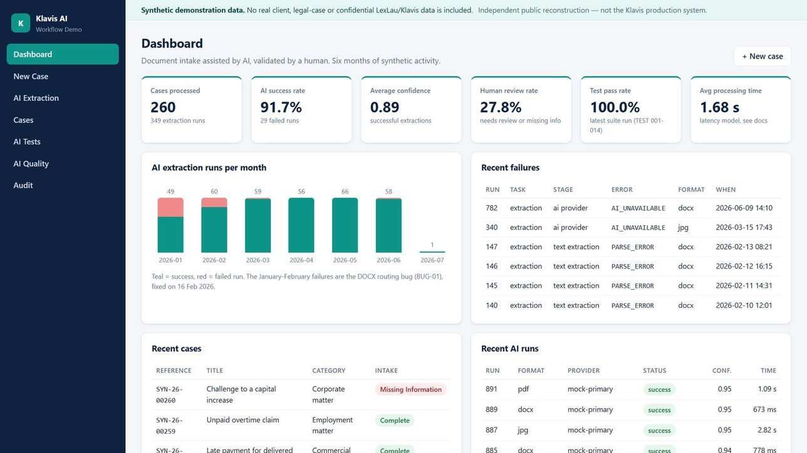

From raw data to reliable analysis
Cleaning, structuring, validation, SQL and Python analysis.
Harry Mulembwe
Turning business, customer and marketing data into clear reporting, actionable insights and practical recommendations.
Power BI · SQL · Excel · Python
Brussels, Belgium
Three professional experiences, each presented as a case study: the problem, the data work, the decisions and the evidence.

Cryptobel · 2025
Using social-media data, NLP, clustering and Power BI to better understand Web3 audiences and support communication decisions.
View case study →
LexLau · Klavis.app · 2026
Structuring data, testing AI features, documenting findings and turning technical observations into useful product feedback, in a confidential legal environment.
View case study →
ODRES Group · 2025–2026
Acquisition, funnel, pipeline and MRR analytics rebuilt publicly with synthetic data: SQL, Python, data quality, Power BI and a budget decision for every campaign.
View case study →No percentage bars. Each skill points to the project where it was applied, so you can check the evidence.
Case study online
I started with a Bachelor in Marketing before specialising in Business Data Analysis. That combination naturally led me toward roles where data is used to understand customers, performance and business decisions.
What I enjoy most is not simply building a dashboard or running an analysis. I like understanding what the team actually needs to know, making the data reliable enough to trust, and presenting the result in a way that leads to action.
Download my Data & Business Analytics CV.
Data Analysis, BI & Reporting, Commercial Analytics, CRM / Customer Insights and Marketing Analytics.